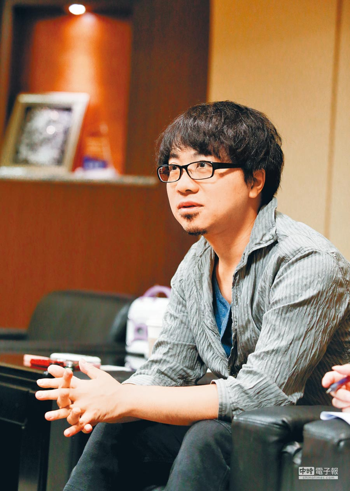
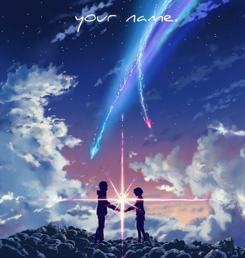

Makoto
Shinkai
Shinkai

Makoto Shinkai (新海 誠 Shinkai Makoto, born Makoto Niitsu (新津 誠 Niitsu Makoto); February 9, 1973) is a Japanese animator, filmmaker, and manga artist best known for directing Your Name, the highest-grossing anime film of all time at the time of release, and was listed by Variety as one of 10 animators to watch in 2016. Asteroid 55222 Makotoshinkai is named after him.

In August 26, 2016, Shinkai released Your Name. The film received critical acclaim, was praised for its animation and emotional impact, and was also a commercial success, becoming the fourth-highest-grossing film of all time in Japan and, as of January 16, 2017, the highest-grossing anime film of all time, overtaking Miyazaki's Spirited Away. In 2017, it was announced that he was working on a new project. It was then revealed to be a new film called Weathering with You, and it released on July 19, 2019, in Japan.
Well, Let's Watch
One of His Anime!
One of His Anime!
Copyright 2019©